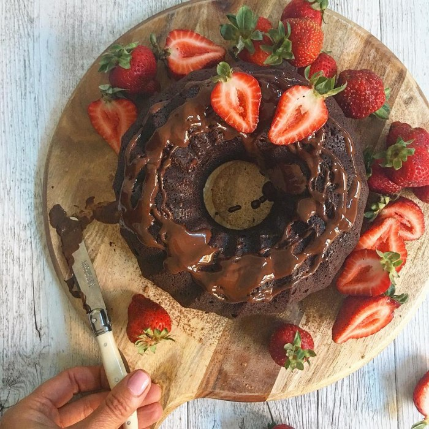

Vegan Chocolate Cake
">
Description
This vegan chocolate cake is rich, moist, and incredibly delicious. Made with simple plant-based ingredients,
it's perfect for any occasion, whether it's a birthday, celebration, or just a treat for yourself!
Ingredients
- 1 1/2 cups all-purpose flour
- 1 cup granulated sugar
- 1/4 cup unsweetened cocoa powder
- 1 tsp baking soda
- 1/2 tsp salt
- 1 cup water
- 1/3 cup vegetable oil
- 1 tbsp apple cider vinegar
- 1 tsp vanilla extract
Steps
- Preheat your oven to 350°F (175°C). Grease and flour an 8-inch round cake pan.
- In a large mixing bowl, whisk together the flour, sugar, cocoa powder, baking soda, and salt.
- Add the water, vegetable oil, apple cider vinegar, and vanilla extract to the dry ingredients. Mix until
well combined and smooth.
- Pour the batter into the prepared cake pan and spread it evenly.
- Bake for 30-35 minutes, or until a toothpick inserted into the center comes out clean.
- Allow the cake to cool in the pan for 10 minutes, then transfer it to a wire rack to cool completely.
- Once cooled, you can frost the cake with your favorite vegan frosting or enjoy it as is!
Home